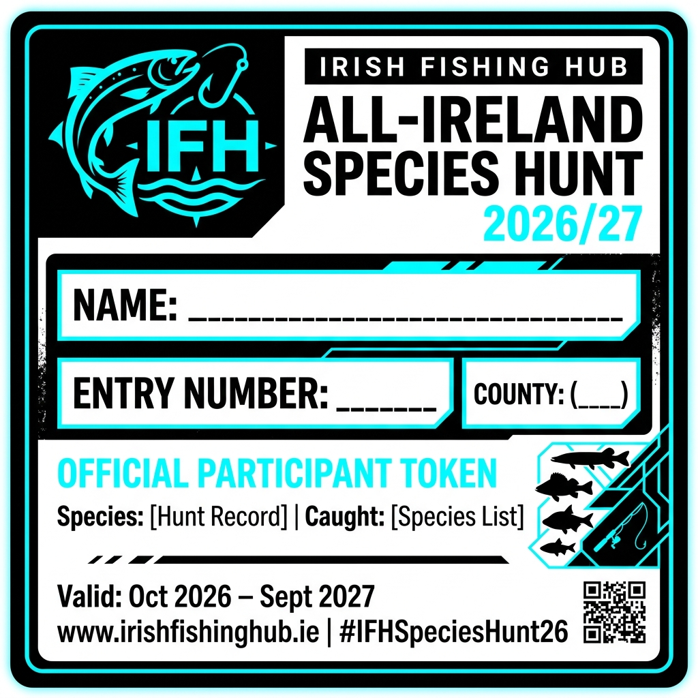

🏆 The Irish Fishing Hub All-Ireland Species Hunt 2026/27
Welcome to Ireland’s ultimate, all-inclusive angling challenge! Whether you fish local canals for freshwater micro-species, roam wild Atlantic beaches, or head deep offshore on a charter boat, this competition is built for you.
It is 100% FREE to enter, open to both freshwater and saltwater, and runs for a full calendar year. The goal is simple: catch, document, and safely release as many different fish species as possible using rod and line in Irish waters.
📅 Competition Timeline
- Start Date: October 1, 2026
- End Date: September 30, 2027
🎣 How to Enter & Submit a Catch
Entering is incredibly easy and can be done right from the water via your favorite social media app or directly on our site:
Your Official Tournament Token
Save this image to your phone or print it out. It must be clearly visible in every catch photo to prove the fish was caught during the 2026/27 event.
📱 Mobile Users: Long-press the image below and select "Save to Photos" to add it to your camera roll.

⬇️ Download Token (Desktop)

- Get Your Entry Number: Send us a Direct Message (DM) on Instagram or TikTok to register! We will assign you a unique Entry Number that you must write on your printed token (or add to your digital photo/caption) to prove it's you.
- Get Your Token: Log in to irishfishinghub.com to download and print your official Irish Fishing Hub Species Hunt Token (or download it to display clearly on a second mobile screen).
- Take the Photo: Take a clear photograph of your catch. The fish, the angler, and the official token must all be clearly visible in the frame.
- Post and Tag: Upload your catch within 48 hours of capture using one of these two methods:
- Social Media: Post the photo/video on Instagram or TikTok. You must tag @IrishFishingHub and use the hashtag #IFHSpeciesHunt26.
- On the Hub: Upload the photo directly to our community catch feed on irishfishinghub.com using the hashtag #IFHSpeciesHunt26.
📋 Official Tournament Rules
1. Scoring & Species Limits
- Every distinct, legally caught species awards 1 point.
- Size does not matter! A minnow, stickleback, or blenny counts exactly the same as a trophy pike, salmon, or blue shark.
- To keep scoring accurate, a maximum of one entry per species will count toward your final score. You can upgrade your catch photo later if you catch a larger specimen, but your point total for that species remains at 1.
2. Fair Angling & Catch Methods
- All fish must be caught legally using a rod, reel, line, and hook.
- Strictly no netting, trapping, or foul-hooking.
- Lines must not be left unattended. All fish must be hooked, fought, and landed by the entering angler.
3. Strict Conservation & Legal Compliance
- This is a 100% Catch & Release tournament. All fish must be photographed immediately and returned safely to the water before you resume fishing.
- All entries must strictly adhere to Inland Fisheries Ireland (IFI) laws, local bye-laws, and EU maritime regulations.
- Highly regulated species (such as Atlantic Salmon, Sea Trout, and Sea Bass) must be handled with extreme care. Targeting protected species during closed seasons, failing to follow strict catch-and-release rules for bass, or fishing for salmonids without the appropriate state licenses will result in immediate disqualification.
4. Verification & Disqualification
- The Irish Fishing Hub judging panel reserves the right to reject any photo where the fish cannot be positively identified, or if the official token is missing or illegible.
- Any evidence of photoshopping, recycling old photos, or mistreatment of fish will result in an immediate lifetime ban from all Irish Fishing Hub events.